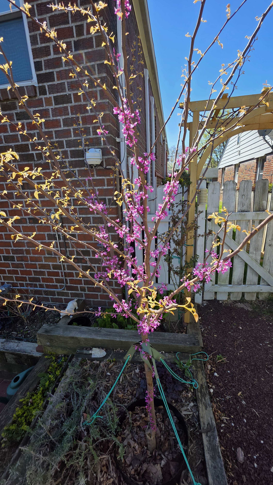
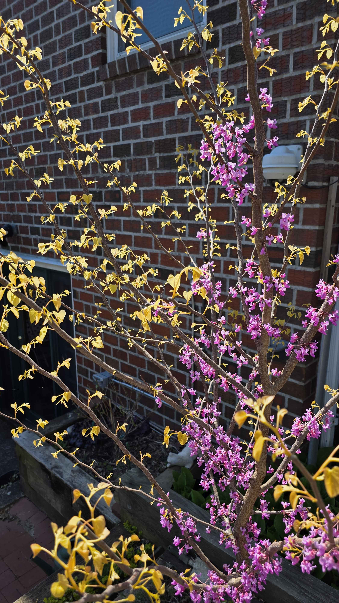
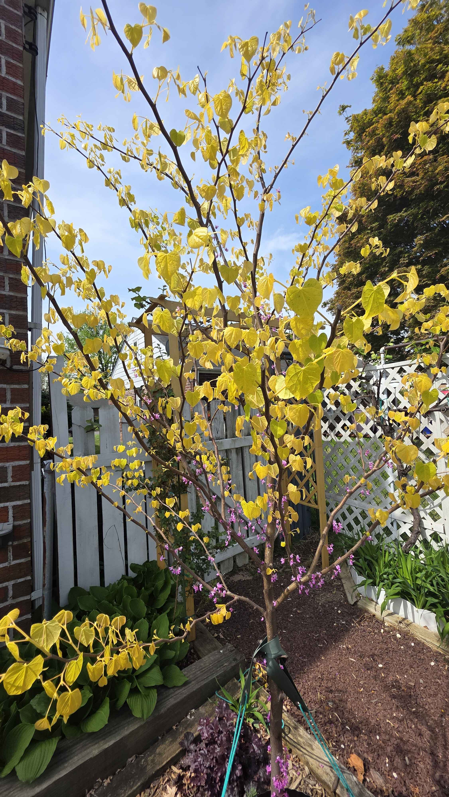
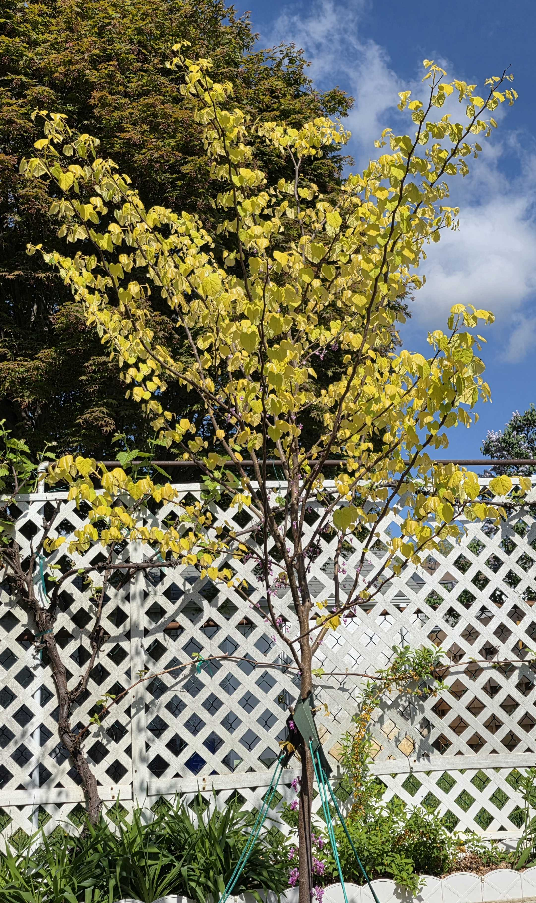
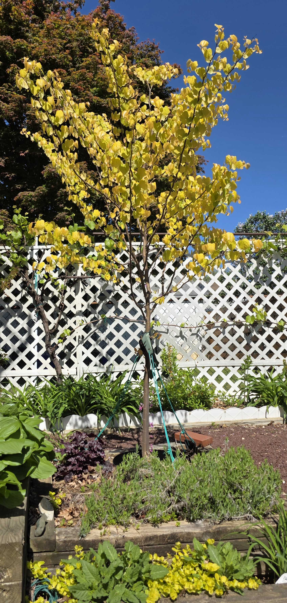
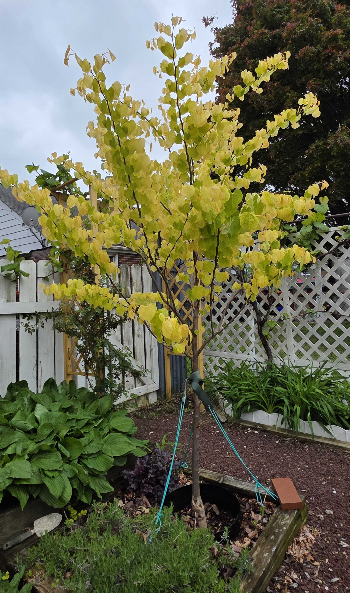

Plant Progress · Cercis canadensis 'The Rising Sun'
Rising Sun Redbud
A spring flare plant, all neon leaves and electric bloom, dramatic in exactly the right way.
April pulse
This is one of its best windows of the year, flowers still glowing while the new leaves are just starting to unfurl in apricot-gold. For a few days, it looks almost backlit.

April 12, 2026
Spring ignition
The Rising Sun redbud is really showing off here, bright magenta flowers still running up the stems while the new foliage is just starting to open in that soft golden-apricot stage. This is one of the best moments for this tree, when bloom and fresh leaf color overlap and the whole thing looks almost lit from inside.
Hot pink bloom, golden new leaves, blue sky, brick behind it. Hard to ask for a better spring entrance.

- spring bloom in full color
- fresh leaf-out underway
- upright structure looks strong
- great color contrast against the brick
April 15, 2026
Another angle on the same flush
A second view of the same redbud, this time catching more of the branching and the way the flowers stack along the upright stems. It reads a little more structural, with the yellow new growth scattered through the canopy like bright punctuation.
Same tree, different angle, same spring punch.

- different angle on the same spring bloom
- more of the branch structure shows through
- gold foliage punctuates the canopy
April 16, 2026
The canopy going gold
The redbud is really shifting now, with the yellow-gold leaves taking over the canopy while the pink bloom still clings to the lower stems. It has that airy, almost lantern-like look that makes this cultivar so distinctive in spring.
A tree that looks like it’s carrying sunlight in its leaves.

- gold leaves are now the main show
- lower flowers still hold some pink
- beautiful contrast against the fence and sky
April 17, 2026
Full gold against the lattice
The Rising Sun has moved even farther into its yellow phase here, the canopy now reading almost entirely gold against the white lattice and blue sky. The bloom is mostly a lower-stem memory now, and what takes over instead is the tree's spring light, that bright translucent leaf color that makes it look less planted than illuminated.
Less blossom-driven now, more like a small tree made of sunlight and thin spring air.

- gold spring foliage is now carrying nearly the whole canopy
- tree reads taller and more open against the lattice backdrop
- pink bloom has mostly dropped to the background stage
- strong contrast between yellow foliage, white lattice, and blue sky
April 21, 2026
Whole tree carrying spring light
This wider view shows what the Rising Sun is doing to the whole yard now, not just to itself. The canopy has gone full clear gold, bright enough to hold the center of the scene against the white lattice and deep blue sky, while the darker maple behind it only makes the color read louder. At this stage it feels less like a specimen in a bed and more like a sheet of spring light suspended on branches.
Some trees bloom. This one glows.

- canopy is now fully in its bright gold spring phase
- tree reads as a major visual anchor in the yard, not just a detail plant
- white lattice and blue sky make the foliage color even stronger
- contrast with the darker maple behind it sharpens the whole scene
April 27, 2026
Gold above the bed
The Rising Sun redbud has settled into its late-April gold, with the whole canopy now reading as a bright vertical flare above the raised bed. The angle catches the tree as part of the larger planting: hostas filling the shaded left edge, heuchera at the base, daylily foliage along the lattice, and the darker Japanese maple behind it making the yellow leaves stand out even more.
By this point in spring, the tree is less a color accent than the thing organizing the whole corner.

- canopy is fully in the clear gold spring foliage phase
- upright new growth is extending above the lattice line
- hostas, heuchera, and daylily foliage frame the tree at bed level
- darker maple foliage in the background deepens the contrast